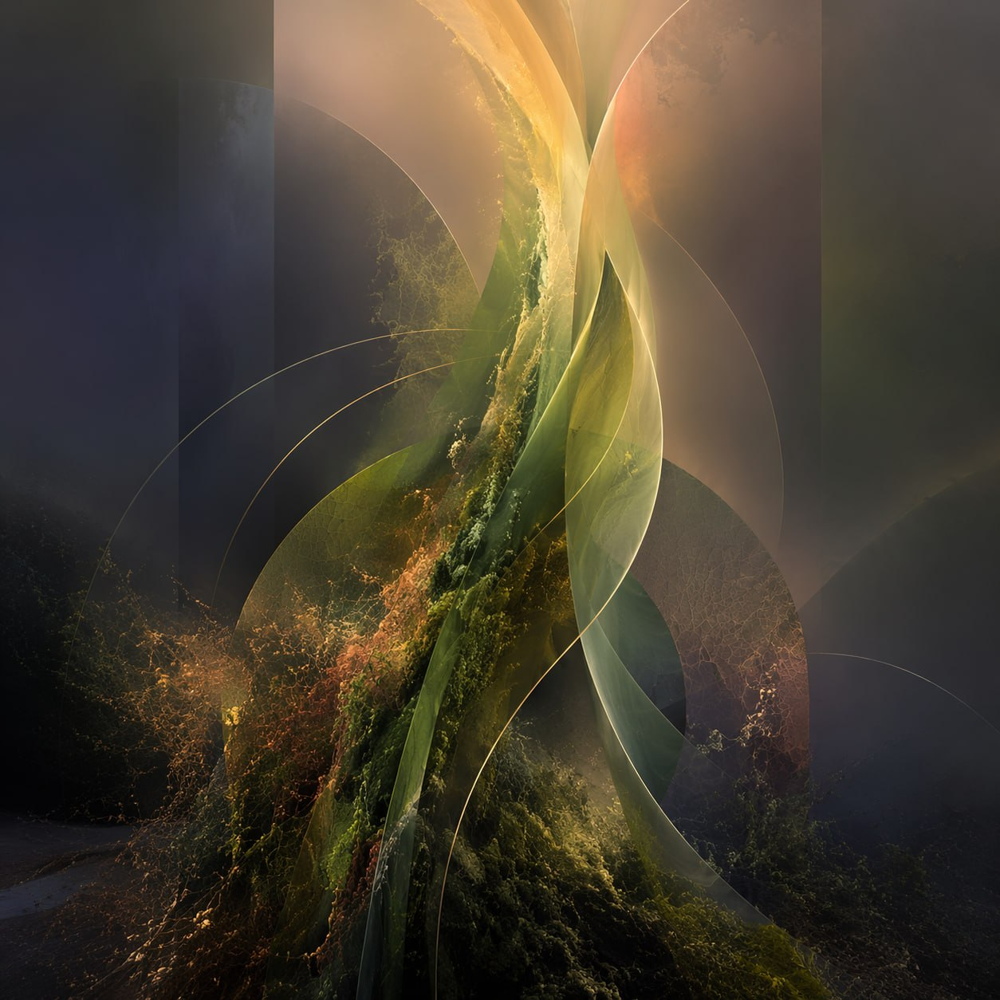

Wild RiseZurich
Deep listening shaped with care, contrast, and emotional range — immersive, inward-facing, and carefully held.
Our Concept
A Sound Journey is a carefully shaped listening experience — continuous music played through a high-quality system in an intimate space, following an arc composed with intention.
Most journeys happen with everyone resting on mattresses, cushions, and blankets in a carefully prepared room. The body stays still so attention can go inward.
The music is played as one continuous arc, usually followed by a short silent integration moment before people head back into the world.
There is no spoken guidance once the journey begins. No instructions, no performance, no pressure to respond in any particular way.
You can adjust your position, open your eyes, step out for a moment, or simply listen quietly. You are always free to regulate your own experience.
Some parts may feel warm and spacious. Others may feel sharper, weirder, or more emotionally charged. That range is part of the form.
The space works best when distractions drop away. We ask people to arrive settled, silence their phones, and give the journey their full attention.
Not a concert. Not therapy. Not a guided meditation.
A carefully held listening container with atmosphere, contrast, and a distinctly artistic arc.
Anatomy of a Sound Journey
A Sound Journey is not one steady build from calm to climax. It moves in waves — attention gathers, contrast opens, intensity rises and turns, and the landing is given time. The exact route changes from one journey to another, but the logic is always shaped with intention.
01
The room settles. Attention narrows. The music creates orientation, trust, and the first sense of entering a distinct atmosphere.
02
Layers start to accumulate. Contrast becomes clearer. What begins as spacious or subtle can start to pull more strongly, emotionally or physically.
03
Intensity does not arrive as one single climax. It may crest more than once, shifting between pressure, tenderness, friction, and release.
04
The ending is not abrupt. It widens, softens, and gives the body and mind time to return — without losing the charge of what just happened.
This is a general map, not a fixed recipe — each journey has its own profile and personality, sometimes a single long wave, sometimes several.
Upcoming Journeys
Each Sound Journey carries its own atmosphere, arc, and emotional charge. Browse the next dates and choose the one that feels right for you.

Wild RiseAbout
Two people, one project held between them — with roles that overlap and blend.
Artist and musical direction
PA is the artist behind Sound Journeys. He selects the music, sequences the arc, and plays the journey from behind the decks. He shapes the journey's overall direction.
Artistic sounding-board, space & logistics
Tobi focuses on everything around the music: the room, the setup, the flow of the evening, the website. He is also a close thinking partner on artistic direction.
Stay in the Loop
Telegram and WhatsApp are the best places to catch new dates, future announcements, and the next journeys as they take shape. If you prefer, you can also stay in the loop by email.
or stay updated by email